Montana Boutique — Manual del POS
Guía de uso de todas las funciones del punto de venta
Roles: Cajero — vende, cobra, hace su corte. · Gerente — lo del cajero + autoriza descuentos, cancelaciones y ajustes. · Admin — todo, incluido el panel de Administración.
1. Acceso y sesión
La primera vez, la app crea un administrador con PIN 1234 y obliga a cambiarlo. El catálogo arranca vacío.
Iniciar sesión
Cada usuario entra con su PIN (4–6 dígitos). El teclado vibra al tocar.
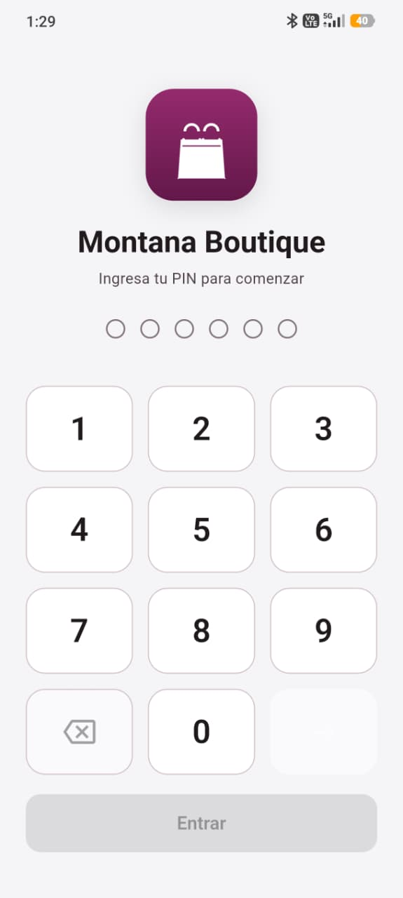
Navegación
Barra inferior: Vender, Corte, Admin (solo administradores) y Salir. El carrito se conserva al cambiar de pestaña.
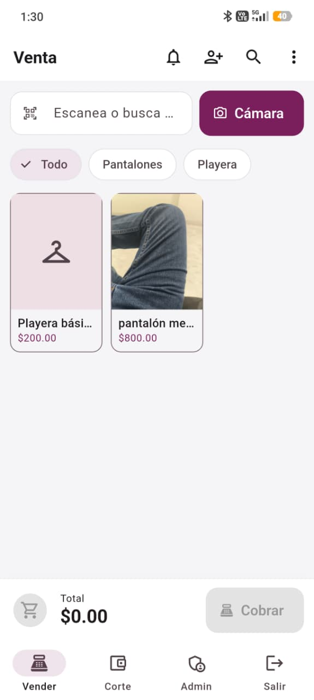
2. Vender (punto de venta)
En tablet ancha se ven dos paneles (carrito + vitrina); en teléfono la vitrina ocupa todo y el carrito va abajo. Desde la barra superior se llega a Inventario, Apartados, Tarjetas de regalo y Devoluciones (en teléfono, en el menú ⋮).
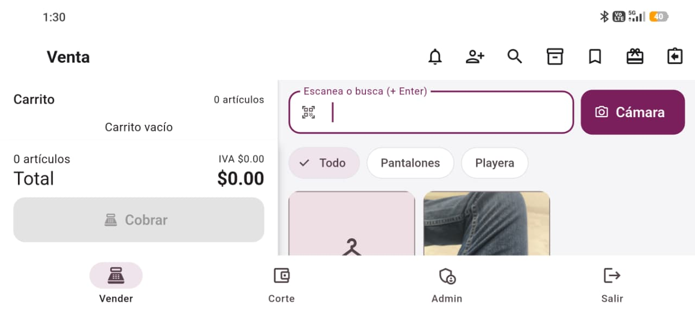
Agregar por escaneo
Con la cámara o con un lector: al leer el código se agrega la variante exacta (talla/color) al carrito automáticamente.
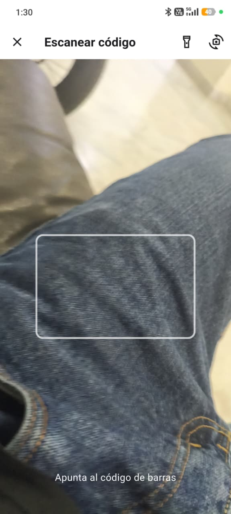
Buscar y elegir variante
Botón Buscar: por nombre o SKU; eliges el producto y su talla/color.
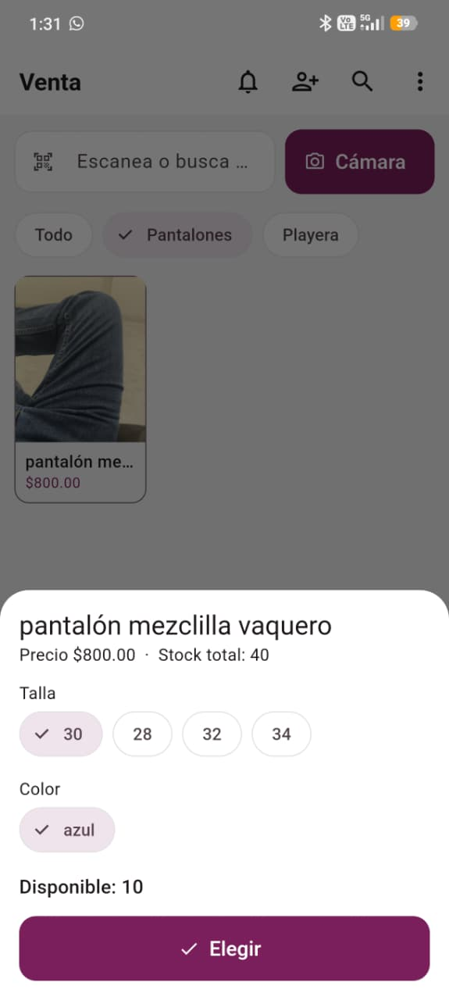
Cobro
Efectivo con cambio, pagos divididos (efectivo/tarjeta/transferencia), pagar con tarjeta de regalo, canjear puntos y asignar cliente. La venta se guarda antes de imprimir; puede ser ticket normal o de regalo (sin precios).
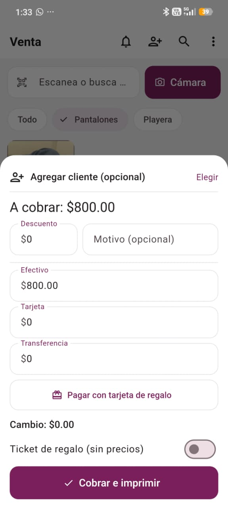
3. Devoluciones y cambios
Se abre desde la barra de Vender. Se busca la venta por folio; se hace reembolso en efectivo (autorización de gerente) o nota de crédito. La pieza dañada se saca del stock vendible. El cambio es devolución + venta nueva en una sola operación (se cobra/acredita la diferencia).
Pantalla de Devoluciones (buscar por folio)
4. Apartados
Se abre desde la barra de Vender. Nuevo apartado: cliente + piezas + anticipo (mín. 30%); reserva las piezas e imprime comprobante. Abonos parciales. Liquidar al saldar (ticket final). Procesar vencidos libera reservas y pasa lo pagado a nota de crédito.
Lista de Apartados / Nuevo apartado
5. Tarjetas de regalo
Se abre desde la barra de Vender. Se emite una tarjeta con código único (el dinero entra al corte de caja) y se consulta saldo. En el cobro se puede pagar con tarjeta de regalo.
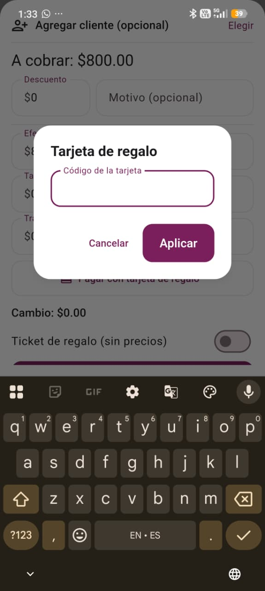
Pantalla de Tarjetas de regalo (vender / consultar saldo)
6. Corte de caja
Pestaña Corte. Se abre con un fondo, se registran retiros/depósitos, se ven las ventas del turno (con opción de cancelar) y se cierra con arqueo (esperado vs contado).
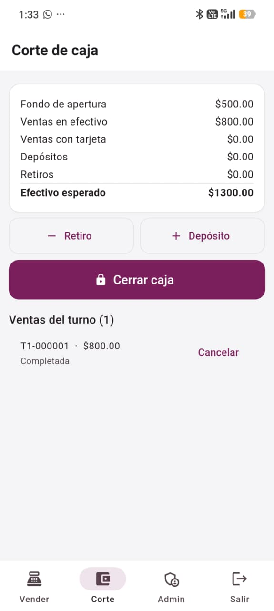
7. Administración
Panel en rejilla, solo administradores: Catálogo, Inventario, Clientes, Programa de puntos, Reportes, Usuarios, Respaldo, Reconciliación e Impresoras & Tickets.
Panel de Administración (rejilla de módulos)
7.1 Catálogo
Buscador + filtros por categoría, rejilla con fotos. Alta de productos (nombre, categoría, precio con IVA incluido, costo, foto que se optimiza sola), generador de matriz talla×color, código de proveedor, etiquetas PDF/ZPL, archivar/eliminar e importar CSV/Excel.
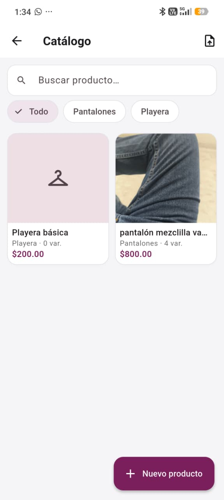
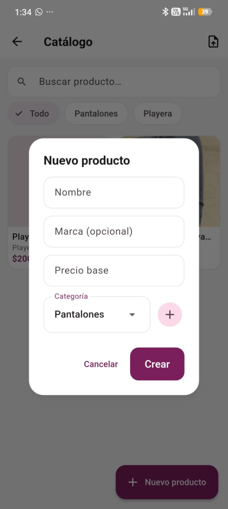
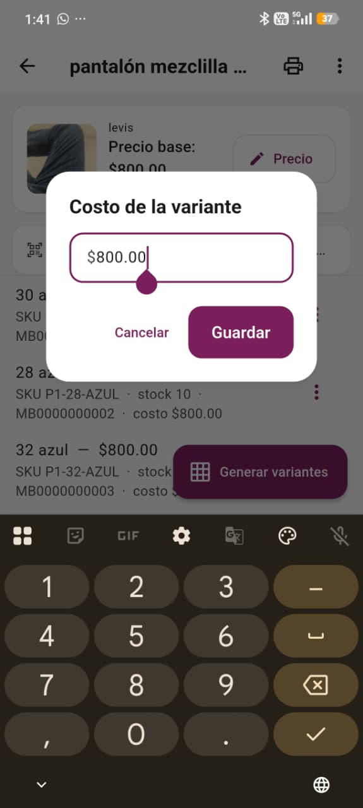
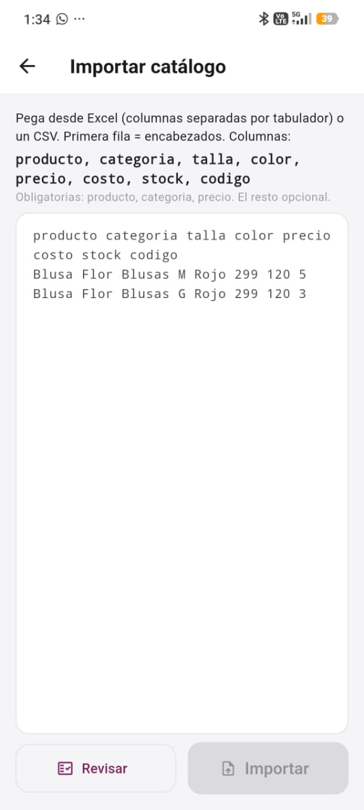
7.2 Inventario
Recepción, ajustes (con motivo), conteo físico y stock bajo. El selector muestra la lista de productos con filtros por categoría (además de búsqueda y escaneo).
Inventario (hub) · Ajuste de stock · Conteo físico
7.3 Clientes (CRM)
Lista con búsqueda y alta; ficha con datos, totales (compras, gasto, última visita), historial y puntos con ajuste manual.
Ficha de cliente (totales + historial)
7.4 Programa de puntos
Reglas: puntos que se ganan por peso y valor de canje por punto (el canje se hace en el cobro).
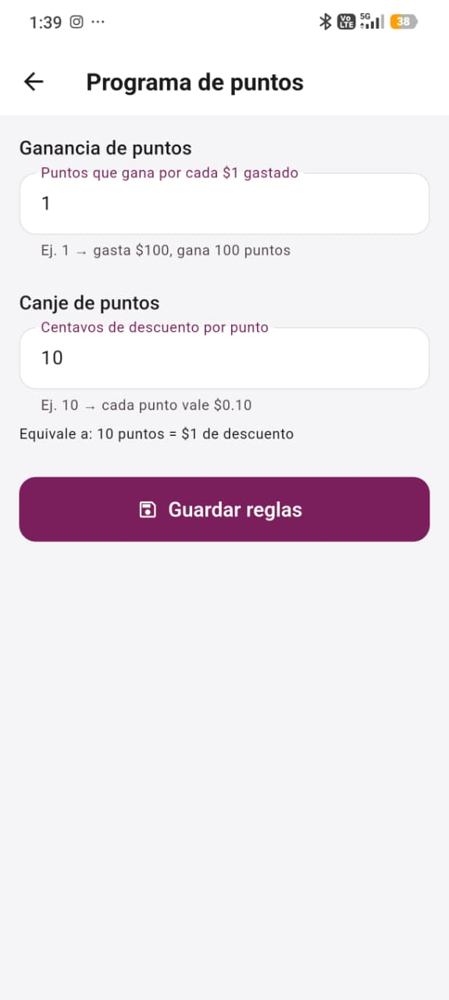
7.5 Reportes
Periodo (Hoy/7/30/60/personalizado) y resumen con comparativo. Incluye ventas por variante (más/menos vendidos, tallas y colores), margen, dead stock, arqueos, devoluciones, ventas por vendedor, recomendaciones y exportar CSV.
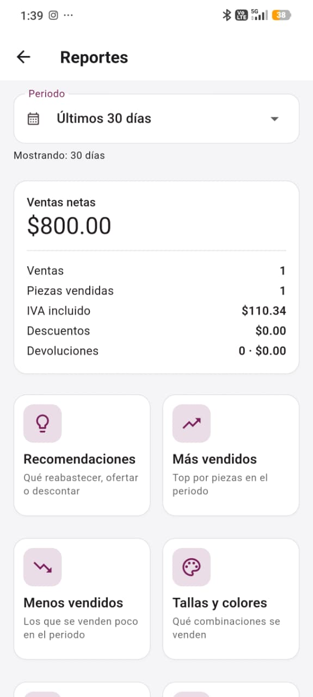
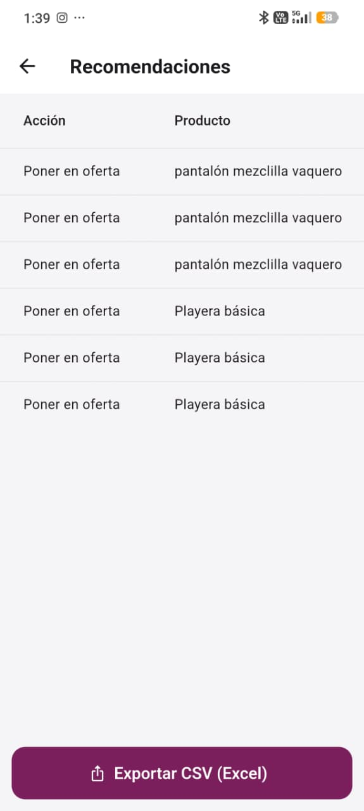
7.6 Usuarios
Solo admin: crear cajeros/gerentes con PIN, activar/desactivar y reset de PIN.
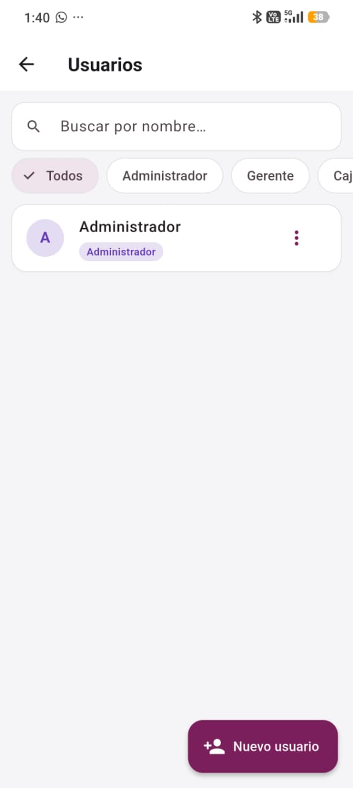
7.7 Respaldo en la nube
Estado del respaldo, reclamar tablet, respaldar y restaurar. Configurar conexión (Supabase): se pega la URL y la llave anon; al cerrar y reabrir la app queda conectada, sin recompilar.
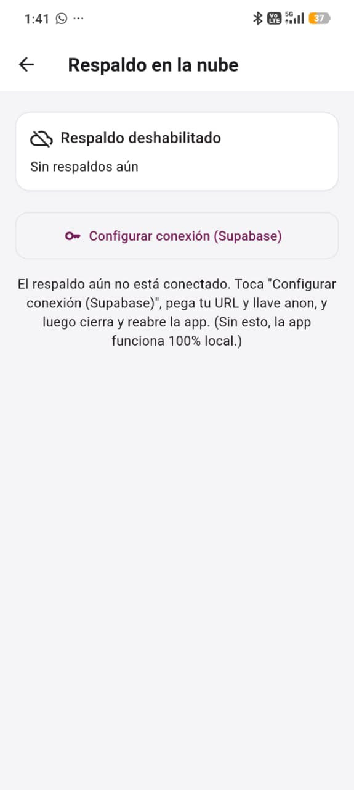
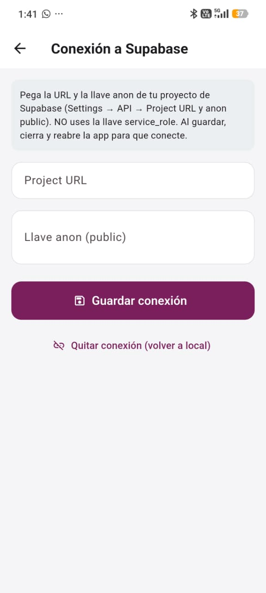
7.8 Impresoras & Tickets
Ancho de papel, impresora predeterminada, imprimir prueba, y personalización del ticket (título, subtítulo, leyenda final y QR) con vista previa. Cajón: interruptor + pin de apertura.
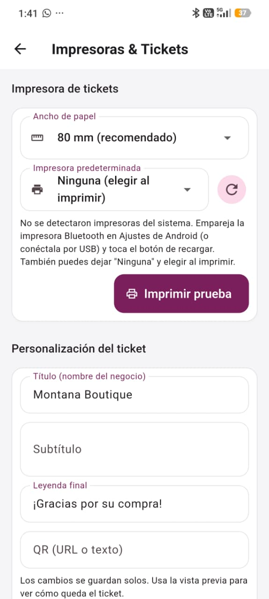
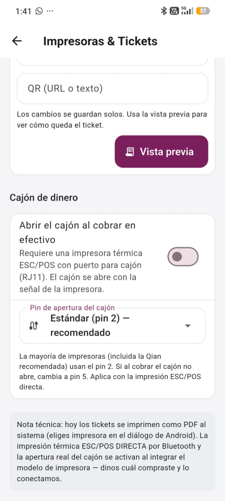